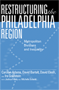
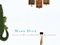
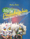
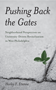
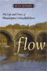
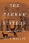
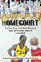
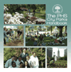
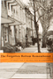
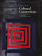

|
Philadelphia
Neighborhoods, Division, and Conflict in a Post-Industrial City
Adams, Carolyn, David Bartelt, David Elesh, Ira Goldstein, Nancy Kleniewski
and William Yancey 224 pp • 6x9 •
Fall 1991
paper 978-1-56639-078-1
cloth 978-0-87722-842-4
|
|  |
Restructuring the Philadelphia Region
Metropolitan Divisions and Inequality
Adams, Carolyn, David W. Bartelt, David Elesh and Ira Goldstein with Michelle Schmitt and Joshua Freely
248 pp • 6x9 • Fall 2008
paper 978-1-59213-897-5
cloth 978-1-59213-896-8
|
 |
Upon the Ruins of Liberty
Slavery, the President's House at Independence National Historical Park, and Public Memory
Aden, Roger C.
New in Paperback!
246 pp • 6x9 • Spring 2017
paper 978-1-4399-1200-3
cloth 978-1-43991-199-0 |

|
200 Years of Latino History in Philadelphia
Al Día, The Staff of
200 pp • 8.5x11 • Fall 2012
cloth 978-0-578-10660-1 |
 |
Rebuilding the News
Metropolitan Journalism in the Digital Age
Anderson, C.W.
236 pp • 6x9 • Fall 2012
paper 978-1-4399-0934-8
cloth 978-1-4399-0933-1 |
 |
Rave Culture
The Alteration and Decline of a Philadelphia Music Scene
Anderson, Tammy L.
240 pp • 6x9 • Spring 2009
paper 978-1-59213-934-7
cloth 978-1-59213-933-0
|
 |
Philadelphia Freedoms
Black American Trauma, Memory, and Culture after King
Awkward, Michael
264 pp • 6x9 • Fall 2013
paper 978-1-4399-0709-2
cloth 978-1-4399-0708-5 |

|
Public
Art in Philadelphia
Bach, Penny Balkin 288 pp • 8x10 •
Fall 1992
cloth 978-0-87722-822-6 |
 |
The Art of Play
Recess and the Practice of Invention
Beresin, Anna R.
202 pp • 6x9 • Fall 2013
paper 978-1-4399-1094-8
cloth 978-1-4399-1093-1
|

|
St. Peter's Church
Faith in Action for 250 Years
Biddle, Cordelia Frances, Elizabeth S. Browne, Alan J. Heavens and Charles P. Peitz
272 pp • 8x10 • Fall 2011
cloth 978-1-43990-795-5
|

|
Boathouse Row
Waves of Change in the Birthplace of American Rowing
Brown, Dotty
288 pp • 10x8 • Fall 2016
cloth 978-1-4399-1282-9
|

|
The
Irish in Philadelphia
Ten Generations of Urban Experience
Clark, Dennis 264 pp • Spring 1982
paper 978-0-87722-227-9
cloth 978-0-87722-057-2
|

|
Acres of Diamonds
Conwell, Russell H., foreword by Russell F. Weigley, introduction by David Adamany
96 pp • 5x7 • Spring 2002
cloth 978-1-56639-962-3
Excerpt available |

|
The
Atlas of Pennsylvania
edited by Cuff, David J., William J. Young, Edward K. Muller, Wilbur
Zelinsky and Ronald F. Abler 304 pp •
13.25x15.5 • Fall 1989
cloth 978-0-87722-618-5 |

|
One Last Read
The Collected Works of the World's Slowest Sportswriter
edited by Didinger, Ray
384 pp • 6x9 • Fall 2007
cloth 978-1-59213-600-1
|

|
The
Eagles Encyclopedia
Didinger, Ray and Robert S. Lyons 336 pp •
8.5x11 • Fall 2005
cloth 978-1-59213-449-6
|

|
The New Eagles Encyclopedia
Didinger,
Ray with Robert S. Lyons 440 pp •
8.3125x10.875 • Fall 2014
cloth 978-1-43991-211-9 |
|
Building Drexel
The University and Its City, 1891–2016
edited by Dilworth, Richardson and Scott Gabriel Knowles
400 pp • 6x9 • Fall 2016
cloth 978-1-4399-1420-5
|

|
Social
Capital in the City
Community and Civic Life in Philadelphia
edited by Dilworth, Richardson
256 pp • 6x9 • Spring 2006
paper 978-1-59213-345-1
cloth 978-1-59213-344-4
|
 |
Travels of William Bartram Reconsidered
Dion, Mark
112 pp • 8.5x12 • Spring 2010
cloth 978-0-6152-5748-8 |

|
South
Philadelphia
Mummers, Memories, and the Melrose Diner
Dubin, Murray 248 pp • 8.5x11 •
Spring 1996
cloth 978-1-56639-429-1 |
 |
Pennsylvania Stories—Well Told
Ecenbarger, William
248 pp • 5.5x8.25 • Spring 2017
cloth 978-1-4399-1465-6
|

|
Philadelphia
Finding the Hidden City
Elliott, Joseph E. B., Nathaniel Popkin, and Peter Woodall
200 pp • 7.875 x 10.5 • Fall 2017
cloth 978-1-4399-1300-0 |

|
Pushing Back the Gates
Neighborhood Perspectives on University-Driven Revitalization in West Philadelphia
Etienne, Harley F.192 pp • 6x9 • Spring 2012
cloth 978-1-4399-0068-0
|

|
Trade
Union Gospel
Christianity and Labor in Industrial Philadelphia, 1865-1915
Fones-Wolf, Ken 260 pp • Fall 1989
cloth 978-0-87722-652-9 |

|
A is for Art Museum
Friedland, Katy and Marla K. Shoemaker
64 pp • 8.25x8.25 • Fall 2008
cloth 978-1-59213-963-7 |

|
Art Museum Opposites
Friedland, Katy and Marla K. Shoemaker
44 pp • 8.5x11 • Fall 2010
cloth 978-1-4399-0523-4
|

|
Philadelphia
Jewish Life, 1940-2000
edited by Friedman, Murray, afterword by Dan Rottenberg 328
pp • 8.375x10.875 • Fall 2002
cloth 978-1-56639-999-9
|

|
Philadelphia Mural Arts @ 30
edited by Golden, Jane and David Updike
208 pp • 10x8 • Spring 2014
cloth 978-1-4399-1131-0 |

|
Philadelphia
Murals and the Stories They Tell
Golden, Jane, Robin Rice and Monica Yant Kinney, photographs by David
Graham and Jack Ramsdale 160 pp • 9x11
• Fall 2002
cloth 978-1-56639-951-7
|

|
More
Philadelphia Murals and the Stories They Tell
Golden, Jane, Robin Rice and Natalie Pompilio, photographs
by David Graham and Jack Ramsdale
160 pp • 9x11 • Fall 2006
cloth 978-1-59213-527-1
|
 |
Whisper Not
The Autobiography of Benny Golson
Golson, Benny and Jim Merod
352 pp • 6x9 • Spring 2016
cloth 978-1-4399-1333-8
|

|
Toomey's Triumph
Inside a Key Senate Campaign
Gullan, Harold I.
256 pp • 6x9 • Spring 2012
cloth 978-1-4399-0835-8
|

|
Birding
the Delaware Valley
A Comprehensive Guide to Birdwatching in Southeastern Pennsylvania,
Central and Southern New Jersey, and Northcentral Delaware
Harding, John J. and Justin J. Harding
223
pp • 5.5x8.25 • Spring 1986
paper 978-0-87722-182-1
cloth 978-0-87722-179-1 |

|
Strange
Philadelphia
Stories from the City of Brotherly Love
Harry, Lou with Michael Strickland 240 pp
• 5.5x8.25 • Fall 1995
paper 978-1-56639-375-1 |

|
I Walked with Giants
The Autobiography of Jimmy Heath
Heath, Jimmy and Joseph McLaren
344 pp • 6x9 • Fall 2009
cloth 978-1-4399-0198-4
|

|
The Perfect Square
A History of Rittenhouse Square
Heinzen, Nancy M.
224 pp • 8x8 • Fall 2009
cloth 978-1-59213-988-0
|

|
Temple University
125 Years of Service to Philadelphia, the Nation, and the World
Hilty, James W.
256 pp • 9x11 • Fall 2009
cloth 978-1-4399-0019-2
|
 |
The
Philadelphia Reader
edited by Huber, Robert, and Benjamin Wallace, foreword by Buzz Bissinger
296 pp • 6x9 • Spring 2006
paper 978-1-59213-461-8
cloth 978-1-59213-460-1
|
 |
Fishing
the Delaware Valley
Ingram, Jr., George H., Robert F. Marler, Jr. and Robert R. Smith,
foreword by Joe Humphreys 256 pp • 6x9
• Fall 1997
paper 978-1-56639-665-3
cloth 978-1-56639-588-5
|

|
Phil Jasner "On the Case"
His Best Writing on the Sixers, the Dream Team, and Beyond
edited by Jasner, Andy
264 pp • 6x9 • Fall 2017
cloth 978-1-4399-1494-6 |

|
Larry
Kane's Philadelphia
Kane, Larry, foreword by Dan Rather 280 pp
• 6x9 • Fall 2000
paper 978-1-56639-961-6
cloth 978-1-56639-806-0
|

|
Dancing the Fairy Tale
Producing and Performing The Sleeping Beauty
Katz Rizzo, Laura
194 pp • 5.5x8.25 • Fall 2014
paper 978-1-43991-122-8
cloth 978-1-43991-121-1 |

|
Forgotten Philadelphia
Lost Architecture of the Quaker City
320 pp • 10x8 • Fall 2007
cloth 978-1-59213-506-6
|

|
Sesqui!
Greed, Graft, and the Forgotten World's Fair of 1926
Keels, Thomas H.
376 pp • 6x9 • Fall 2016
cloth 978-1-4399-0329-2 |

|
Life, Liberty, and the Mummers
Kennedy III, E. A.
192 pp • 8.5x11 • Fall 2007
cloth 978-1-59213-588-2
|

|
Dr. Radway's Sarsaparilla Resolvent
Kephart, Beth
266 pp • 5.5x8.5 • Spring 2013
paper 978-0-98404-296-8
|
 |
Flow
The Life and Times of Philadelphia's Schuylkill River
Kephart, Beth
120 pp • 5.5x8.25 • Spring 2007
paper 978-1-59213-637-7
cloth 978-1-59213-636-0
|

|
Love
A Philadelphia Affair
Kephart, Beth
New in Paperback!
176 pp • 5.5x8.5 • Fall 2017
paper 978-1-4399-1316-1
cloth 978-1-43991-315-4 |

|
"Batting
Cleanup, Bill Conlin"
edited by Kerrane, Kevin, foreword by Dick Schaap 240
pp • 6x9 • Spring 1997
cloth 978-1-56639-541-0
|

|
Gardens
of Philadelphia and the Delaware Valley
Klein, Jr., William M., photographs by Derek Fell 320
pp • 8x10 • Spring 1995
cloth 978-1-56639-313-3 |

|
P
Is for Philadelphia
Korman, Susan 64 pp • 10x8 • Spring
2005
cloth 978-1-59213-107-5
|

|
Working
People of Philadelphia, 1800-1850
Laurie, Bruce Spring 1983
paper 978-0-87722-292-7
|

|
A Guide to the Great Gardens of the Philadelphia Region
Text by Levin, Adam, Photographs by Rob Cardillo
192 pp • 5.375x9.125 • Spring 2007
paper 978-1-59213-510-3
|

|
Danny
Litwhiler
Living the Baseball Dream
Litwhiler, Danny with Jim Sargent, foreword by Stan Musial
312 pp • 6x9 • Fall 2006
cloth 978-1-59213-524-0
|

|
Bill Giles and Baseball
Lord, John B.
328 pp • 6x9 • Spring 2014
cloth 978-1-43990-786-3
|

|
Espejos y ventanas (Mirrors and Windows)
historias orales de trabajadores agricolos y sus familias (Oral Histories of Mexican Farmworkers and the Families)
edited by Lyons, Mark, and August Tarrier
318 pp • 6x9 • Spring 2012
paper 978-0-971-2996-6-5 |

|
On Any Given Sunday
A Life of Bert Bell
Lyons, Robert S.
352 pp • 6x9 • Fall 2009
cloth 978-1-59213-731-2
|
|
Palestra
Pandemonium
A History of the Big 5
Lyons, Robert S. 240 pp • 8.375x10.875
• Fall 2002
cloth 978-1-56639-991-3
|
|  |
The Parker Sisters
A Border Kidnapping
Maddox, Lucy
256 pp • 6.125x9 • Spring 2016
cloth 978-1-4399-1318-5
|
 |
My Soul's Been Psychedelicized
Electric Factory: Four Decades in Posters and Photographs
Magid, Larry with Robert Huber
200 pp • 10x12 • Spring 2011
cloth 978-1-4399-0180-9 |
 |
Philadelphia's
Cultural Landscape
The Sartain Family Legacy
edited by Martinez, Katharine and Page Talbott 211
pp • 8.5x11 • Fall 2000
cloth 978-1-56639-791-9
|

|
The Philadelphia Mummers
Building Community through Play
Masters, Patricia Anne
256 pp • 5.5x8.25 • Spring 2007
paper 978-1-59213-619-0
cloth 978-1-59213-609-4
|
 |
City in a Park
A History of Philadelphia's Fairmount Park System
McClelland, James and Lynn Miller
368 pp • 8x10 • Fall 2015
cloth 978-1-4399-1208-9 |
 |
Philadelphia
Stories
A Photographic History, 1920-1960
Miller, Fredric M.,
Morris J. Vogel and Allen F. Davis
319
pp • 8x10 • Fall 1988
cloth 978-0-87722-551-5 |
 |
Still
Philadelphia
A Photographic History, 1890-1940
Miller, Fredric M., Morris J. Vogel and Allen F. Davis 312
pp • 8x10 • Spring 1983
cloth 978-0-87722-306-1 |
|
Concise
Historical Atlas of Pennsylvania
edited by Muller, Edward K. 48 pp • Fall
1989
paper 978-0-87722-672-7 |

|
Homecourt
The True Story of the Best Basketball Team You've Never Heard Of
Needle, Larry
72 pp • 5.5x8.5 • Spring 2013
paper 978-0-98195-608-4
|

|
The
Philadelphia Area Weather Book
Nese, Jon and Glenn ’Hurricane’ Schwartz, foreword by Edward
G. Rendell 264 pp • 8.375x10 • Spring
2005
paper 978-1-59213-391-8
cloth 978-1-56639-956-2
|

|
Klezmer
Music and Community in Twentieth-Century Jewish Philadelphia
Netsky, Hankus
New in Paperback!
186 pp • 6x9 • Spring 2017
paper 978-1-4399-0904-1
cloth 978-1-4399-0903-4
|

|
Hikes
Around Philadelphia
Newman, Boyd and Linda Newman
224
pp • 5.5x8.25 • Spring 1997
paper 978-1-56639-530-4
cloth 978-1-56639-529-8
|

|
The
Phillies Reader
edited by Orodenker, Richard 302 pp •
6x9 • Spring 2005
paper 978-1-59213-398-7
cloth 978-1-56639-503-8
|

|
Community Gardening
A PHS Handbook
Pennsylvania Horticultural Society
132 pp • 8.5x8.5 • Fall 2011
paper 978-0-615-40150-8 |
|  |
The PHS City Parks Handbook
Pennsylvania Horticultural Society
112 pp • 8.5x8.5 • Spring 2011
paper 978-0-615-26081-5 |

|
The
Philadelphia Orchestra
A Century of Music
Philadelphia Orchestra Assoc., , edited by John Ardoin 256
pp • 9x12 • Fall 1999
cloth 978-1-56639-712-4 |

|
The
Whiz Kids and the 1950 Pennant
Roberts, Robin and C. Paul Rogers, III, foreword by Pat Williams
390 pp • 6x9 • Spring 1996
paper 978-1-56639-790-2
cloth 978-1-56639-466-6
|

|
Philadelphia
Maestros
Ormandy, Muti, Sawallisch
Rodríguez-Peralta, Phyllis White
192 pp • 6x8 • Spring 2006
cloth 978- 1-59213-487-8
|

|
The Outsider
Albert M. Greenfield and the Fall of the Protestant Establishment
Rottenberg, Dan
384 pp • 9x9 • Fall 2014
cloth 978-1-43990-841-9 |

|
AFSCME's Philadelphia Story
Municipal Workers and Urban Power in the Twentieth Century
Ryan, Francis
320 pp • 6x9 • Fall 2010
paper 978-1-4399-0279-0
cloth 978-1-4399-0278-3
|

|
More Than a Game
Life Lessons from Philadelphia's Sports Community
Shorr-Parks, Eliot, and Steve Parks
266 pp • 6x9 • Spring 2012
paper 978-0-9840429-0-6 |
 |
Philadelphia
A Brief History
Revised and Updated Edition
Simon, Roger D.
156 pp • 6x9 • Spring 2017
paper 978-1-932304-26-8
|

|
The SPHAS
The Life and Times of Basketball's Greatest Jewish Team
Stark, Doug, Foreword by Lynn Sherr 344 pp • 6x9 • Spring 2011
cloth 978-1-59213-633-9
|

|
City
of Sisterly and Brotherly Loves
Lesbian and Gay Philadelphia, 1945-1972
Stein, Marc 480 pp • 6x9 • Fall
2004
paper 978-1-59213-130-3
|

|
Merger Games
The Medical College of Pennsylvania, Hahnemann University, and the Rise and Fall of the Allegheny Health Care System
Swazey, Judith P.
324 pp • 6x9 • Fall 2011
cloth 978-1-4399-0717-7
|

|
Global Philadelphia
Immigrant Communities Old and New
Edited by Takenaka, Ayumi and Mary Johnson Osirim
320 pp • 6x9 • Spring 2010
paper 978-1-43990-012-3
cloth 978-1-43990-013-0
|

|
The Philly Fan's Code
The 50 Toughest, Craziest, Most Legendary Philadelphia Athletes of the Last 50 Years
Tanier, Mike
264 pp • 5.5x8.25 • Fall 2011
paper 978-1-4399-0599-9
|
 |
The Forgotten Bottom Remembered
Stories from a Philadelphia Neighborhood
edited by Tarrier, August
202 pp • 6x9 • Spring 2012
paper 978-0-971-2996-4-1 |

|
Cultural
Connections
Museums and Libraries of the Delaware Valley
Vogel, Morris J. 256 pp • Fall 1991
cloth 978-0-87722-840-0 |

|
The
Education of a University President
Wachman, Marvin, foreword by James W. Hilty 240
pp • 6x9 • Spring 2005
cloth 978-1-59213-376-5
|

|
Philadelphia
Preserved
Catalog of the Historic American Buildings Survey
Webster, Richard J., introduction by Charles E. Peterson Spring
1975
paper 978-0-87722-215-6
cloth 978-0-87722-089-3 |
 |
Biz Mackey, a Giant behind the Plate
The Story of the Negro League Star and Hall of Fame Catcher
Westcott, Rich, forewords by Monte Irvin and Ray Mackey III
160 pp • 5.375 x 8.5 • Fall 2017
cloth 978-1-4399-1551-6
|

|
A
Century of Philadelphia Sports
Westcott, Rich, foreword by Edward G. Rendell 400
pp • 7x10 • Spring 2001
cloth 978-1-56639-861-9
|

|
The Mogul
Eddie Gottlieb, Philadelphia Sports Legend and Pro Basketball Pioneer
Westcott, Rich, foreword by Paul Arizin
320 pp • 6x9 • Spring 2008
cloth 978-1-59213-655-1
|

|
Native
Sons
Philadelphia Baseball Players Who Made the Major Leagues
Westcott, Rich, foreword by Bill Campbell 184
pp • 5.5x8.25 • Fall 2003
paper 978-1-59213-215-7
|

|
The
Phillies Encyclopedia
Westcott, Rich and Frank Bilovsky, foreword by Harry Kalas
Third Edition
696 pp • 9x12 • Spring 2004
cloth 978-1-59213-015-3
|

|
Veterans
Stadium
Field of Memories
Westcott, Rich, foreword by Darren Daulton 232
pp • 7x10 • Fall 2005
cloth 978-1-59213-428-1
|

|
Philadelphia's
Old Ballparks
Westcott, Rich 224 pp • 7x10 • Spring
1996
cloth 978-1-56639-454-3
|

|
From
Puerto Rico to Philadelphia
Puerto Rican Workers and Postwar Economies
Whalen, Carmen Teresa 328 pp • 7x10 •
Fall 2000
paper 978-1-56639-836-7
cloth 978-1-56639-835-0
|
|
Philadelphia
magazine’s Ultimate Restaurant Guide
edited by White, April, foreword by Maria Gallagher 192
pp • 5.5x8.25 • Fall 2004
paper 978-1-59213-146-4
|
|
Ethnic Renewal in Philadelphia's Chinatown
Space, Place, and Struggle
Wilson, Kathryn E.
278 pp • 6x9 • Spring 2015
paper 978-1-4399-1215-7
cloth 978-1-4399-1214-0
|

|
Philadelphia's
Black Elite
Activism, Accommodation, and the Struggle for Autonomy, 1787-1848
Winch, Julie 256 pp • 6x9 • Fall
1987
paper 978-1-56639-088-0
cloth 978-0-87722-515-7
|

|
Forklore
Recipes and Tales from an American Bistro
Yin, Ellen 288
pp • 10x8 • Fall 2007
cloth 978-1-59213-651-3
|